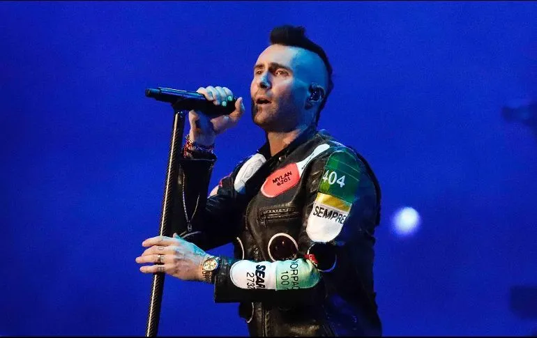

- Demi Lovato estrena el video de "I love me" y ya es tendencia
La popular cantante estadounidense Demi Lovato lanzó el videoclip
de "I love me", su reciente éxito. Como ocurre con sus hits,
ya se transformó en tendencia, pues en menos de un día acumuló
más de 4 millones de reproducciones en YouTube. El video fue creado
después de un año muy difícil para la cantante, que expresa sus
senitmientos con su música.
- Spotify Awards
El Auditorio Nacional y la Ciudad de México fueron los primeros
en recibir la primera edición de Spotify Awards 2020 y figuras como
la Banda MS, Los Ángeles Azules, Karol G, J Balvin entre otros
famosos de la música mundial.Bad Bunny fue el más nominado, siendo en 13
de las categorías de la premiación
- Lady Gaga lanzará su álbum "Chromatica" el 10 de abril de 2020
En entrevista con Apple Music, la artista aseguró que el trabajo discográfico es
"sobre sanar y también sobre ser valiente. Cuando hablamos de amor creo que es muy importante
incluir también el hecho de que amar a alguien requiere de mucha valentía".Lady Gaga anunció
este lunes a través de su cuenta de Instagram que lanzará el próximo 10 de abril un nuevo
álbum titulado "Chromatica", un trabajo que llega poco después de salir a la luz su nuevo
sencillo "Stupid Love".
- Justin Bieber presentó su nuevo álbum, “Changes”, y causó furor en las redes
El cantante canadiense Justin Bieber acaba de estrenar su álbum “Changes” y ya se
convirtió en furor en las redes sociales. El videoclip de uno de los temas del disco,
“Intentions” -que hizo en colaboración al rapero Quavo-, cuenta con dos versiones que
lograron millones de reproducciones en YouTube.
- Adam Levine recuerda a Kobe Bryant durante concierto en CDMX
El vocalista de Maroon 5 portó una camiseta blanca con el número 24 y el apellido del
ex basquetbolista impresos. Adam Levine le rindió un pequeño homenaje al legendario jugador
de la NBA Kobe Bryant durante su concierto en el Foro Sol de la Ciudad de México. Durante su
primer concierto de su gira mundial, el cantante estadounidense decidió portar una camiseta
blanca que tenía escritos el número 24 y el apellido de Bryant en la espalda. Aunque no se
pronunció al respecto durante su presentación, sus admiradores mexicanos sabían que cuando
interpretara "Memories", sería un tema dedicado al basquetbolista y fue en dicha canción
que las luces se tornaron a un morado tenue, en referencia a los Lakers.
